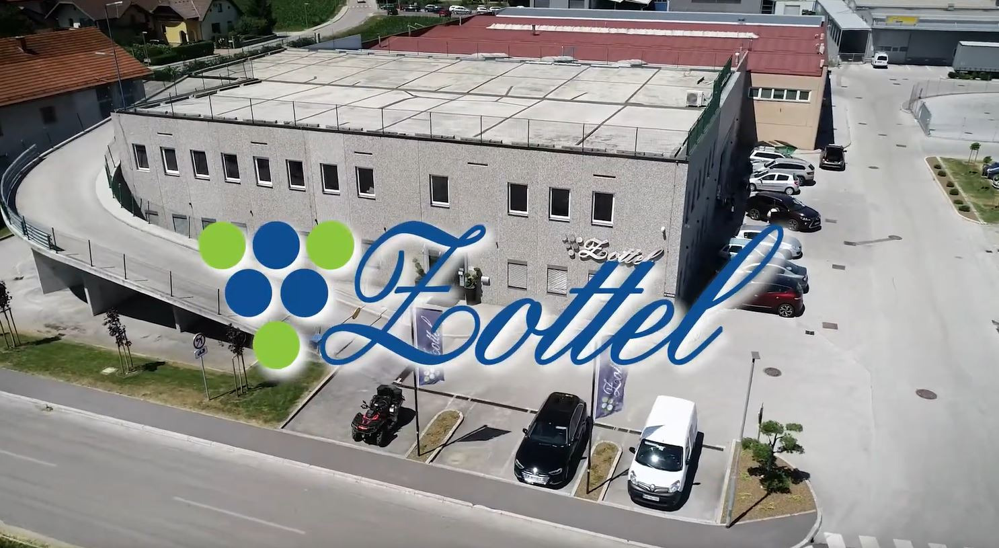
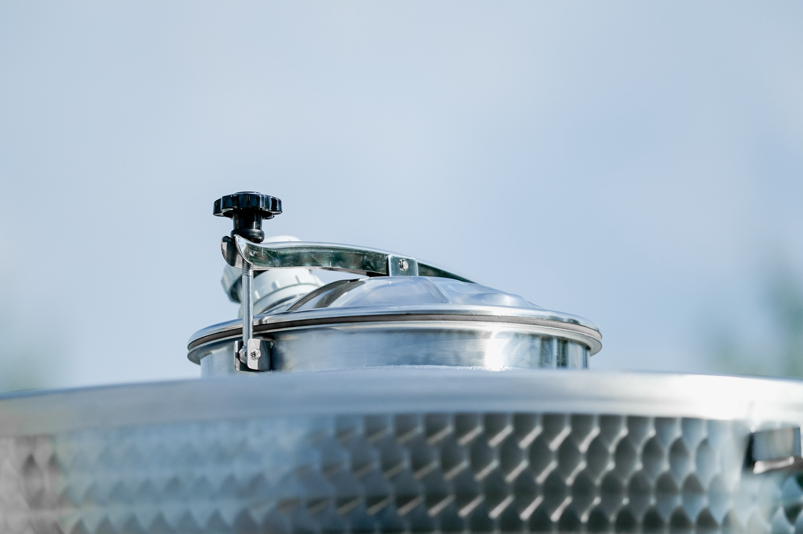

Zasidrani v tradiciji, zremo v prihodnost.
Zottel d.o.o. je uspešno družinsko podjetje, kjer že 30 let razvijamo in proizvajamo vrhunske rešitve za potrebe vinarske, sadjarske in oljarske obrti, žganjekuhe ter pivovarn. Naše ključne prednosti so lasten razvoj in know-how, slovenska proizvodnja in lastna blagovna znamka Zottel.
Zavezani kakovosti in trajnosti naš proizvodni program odlikujeta sodoben dizajn in izjemno dolga življenjska doba. Po naročilu izdelamo izdelek, popolnoma prilagojen vašim potrebam in željam.

PredvajajZ vizijo segamo čez vse meje.
Danes je ime Zottel v svetu prepoznavno kot simbol kakovosti in zanesljivosti. V prihodnosti želimo še okrepiti pozicijo enega izmed vodilnih evropskih proizvajalcev vrhunske opreme za vinarstvo, sadjarstvo, oljarstvo, žganjekuho in pivovarne.
Stremimo k razvoju novih rešitev ter tehnološki izpopolnjenosti s 100-odstotno natančnostjo pri varjenju. 90 odstotkov izdelkov izvozimo na tuje trge, po Evropi, v Ameriko, Rusijo, Avstralijo in Gruzijo.

Verjamemo v vrednote družinskega podjetništva.
Kakovost
Kakovost je naše osrednje vodilo ustvarjanja in delovanja. Odličnost je naša zaveza tudi pri izbiri surovin, upravljanju proizvodnih procesov in dobavi izdelkov.
Strokovnost
Nenehno vlagamo v kader, nadgrajujemo lastno znanje in izkušnje, na podlagi katerih vam svetujemo in stojimo ob strani kot strokovnjaki na svojem področju.
Odzivnost
Fleksibilnost je eno osrednjih načel zanesljive podpore kupcem. Zagotavljamo hitro odzivnost in kratke dobavne roke z zalogami v lastnih skladiščih.
Integriteta
Verjamemo v poštenost in iskrenost. Zaupanje je osnova dobrega sodelovanja in največji potencial za dolgoročno, uspešno in perspektivno rast podjetja.
Ponosni na naše korenine
Vsi skupaj delujemo usklajeno, v koraku s časom in vizijo prihodnosti, a hkrati v skladu z dolgoletno družinsko tradicijo zanesljivosti.
Branko Zottel v manjši garažni delavnici v Dobriši vasi v Petrovčah skupaj z očetom začne izdelovati prve izdelke.
V manj kot desetih letih zgradimo nov proizvodni obrat v Žalcu.
Prepoznavnost seže čez meje Evrope, lastna blagovna znamka se krepi na globalnem trgu.
Poslovnih in proizvodnih prostorov danes, s sodobno in visoko zmogljivo tehnologijo.